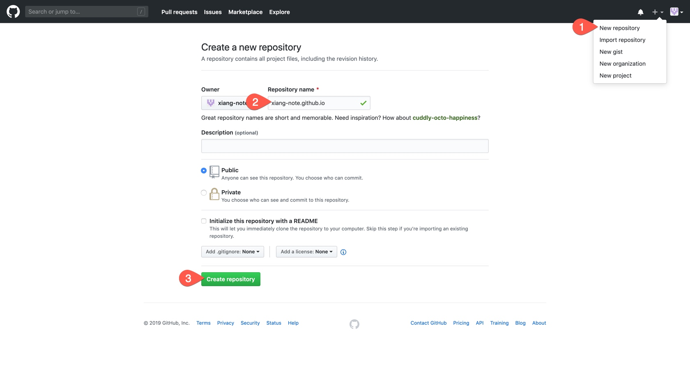
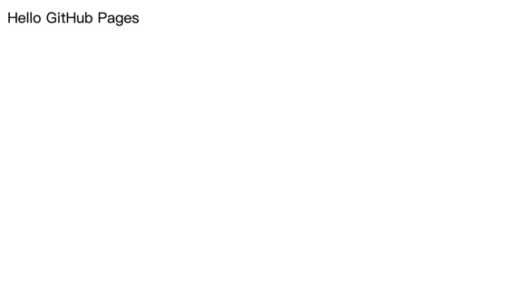

利用 GitHub Pages 建立免費靜態網站
一直以來想用 GitHub Pages 建立個筆記網站，這次就順手做個歷程記錄。
事前準備
需要先有一個 GitHub 帳號，沒有的可以先去 註冊 一個。
建立一個 Repository

- 建立新 Repository
- 輸入 Repository 名稱
{username}.github.io - 直接創建即可
{username}為你的 GitHub 帳號名稱
建立內容
以下使用 xiang-note 當作帳號示範
Clone Repository
git clone https://github.com/xiang-note/xiang-note.github.io.git
加入內容
cd xiang-note.github.io
# ~/xiang-note.github.io
echo "Hello GitHub Pages" > index.html
Push
git add .
git commit -m "First commit"
git push
頁面測試
最後打開網頁 https://xiang-note.github.io

看到這個畫面代表成功。
結論
整體操作上來說相當簡單，只要建立好對應名稱的 Repository 後，GitHub Pages 就會自動把網址對應到 Repository 了。